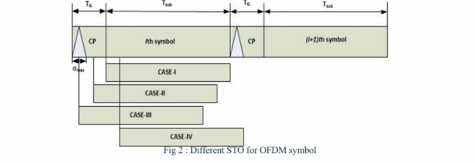
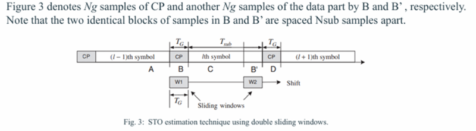
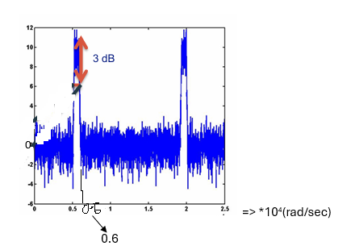
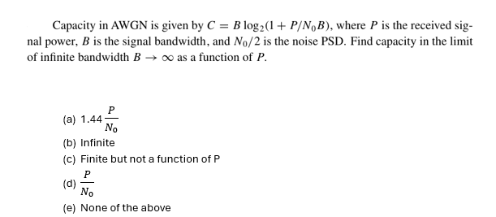
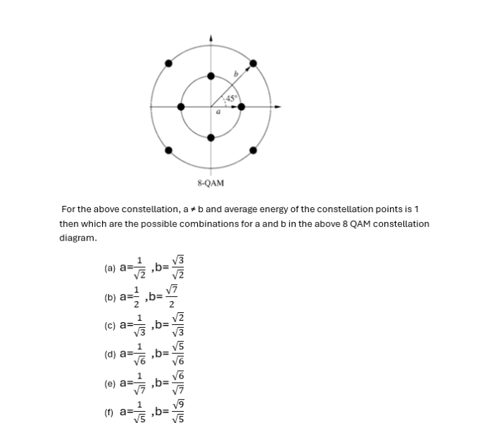
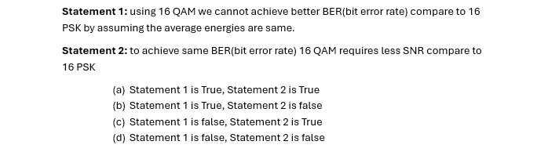
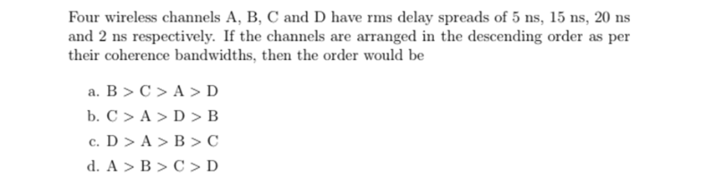
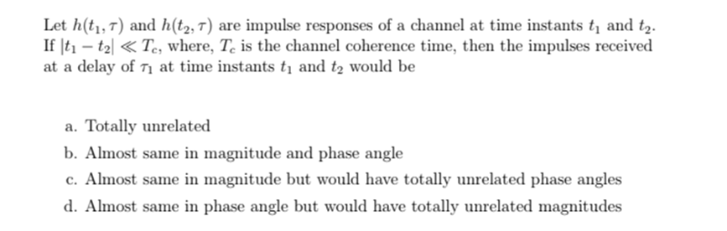
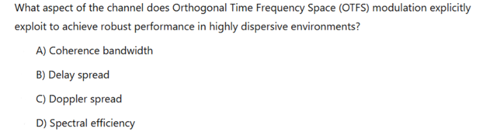
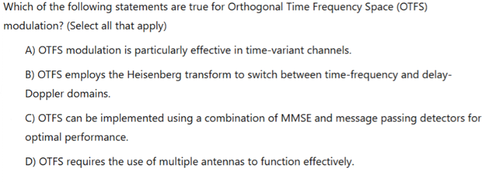

1
Figure shows four different cases of timing offset, in which the estimated starting point is exact, a little earlier, too early, or a little later than the exact timing instance. In which cases ISI and ICI occur and is it essential to apply a symbol timing offset scheme to prevent STOs?

- CASE-IV: ISI occurs, ICI occurs, and need to apply a symbol timing offset scheme to prevent STOs
- CASE-IV: ISI occurs, ICI occurs, and there is no need to apply a symbol timing offset scheme to prevent STOs
- CASE-I: ISI occurs, ICI does not occur, and there is no need to apply a symbol timing offset scheme to prevent STOs
- CASE-II: ISI occurs, ICI occurs, and there is no need to apply a symbol timing offset scheme to prevent STOs
- CASE-I: ISI does not occur, ICI does not occur, and there is no need to apply a symbol timing offset scheme to prevent STOs
- CASE-III: ISI occurs, ICI does not occur, and there is no need to apply a symbol timing offset scheme to prevent STOs
- CASE-III: ISI occurs, ICI occurs, and it is not essential to apply a symbol timing offset scheme to prevent STOs
- CASE-II: ISI occurs, ICI does not occur, and there is no need to apply a symbol timing offset scheme to prevent STOs
2
Identify the STO for this

- All the above are correct.
- STO can be found by searching for the point where the difference between two blocks of NG samples within these two sliding windows is minimized.
- STO can be found by maximizing the square of the correlation between a block of NG samples (seized in window W1) and another between a block of NG samples (seized in window W2).
- STO can be found by minimizing the difference between NG sample block (seized in window W1) and the conjugate of another NG sample block (seized in window W2).
3
What is the center frequency and bandwidth for the below power spectrum which is normalized with noise power [Note: consider the marked details to solve this.]

- Bandwidth = 318 Hz, center frequency=795Hz
- Bandwidth = 1000 Hz, center frequency=5500Hz
- Bandwidth = 1000 Hz, center frequency=5000Hz
- Bandwidth = 159 Hz, center frequency=875Hz
4
Write a program to perform Symbol Timing Offset (STO) estimation in an OFDM system using the Convolutional Neural Network (CNN) model. Use a dataset of received OFDM symbols with known STO values to train the CNN. Evaluate the model's estimation accuracy and minimum absolute error(MAE) on a test dataset.
Instructions:
Generated synthetic OFDM data with random STO values is available in QUIZ 2 folder from files section. Details of the generated data listed below - Number of samples in the data set = 100000
- OFDM size = 64
- Cyclic Prefix length = 16
- STO max = 10 # Maximum symbol timing offset
- SNR dB = 20
Split the data into training and testing sets.(Use the first 80% as training data set and last 20% dataset as testing data set, don’t change the order of the data and set random seeds for reproducibility. (eg: random.seed(42) # Python random module seed
np.random.seed(42) # NumPy random module seed
tf.random.set_seed(42) # TensorFlow random seed))
Define a simple CNN architecture suitable for regression.- model = models.Sequential()
- Input layer: (timesteps, features)
- First convolutional layer with 32 filters, kernel size 3, ReLU activation
- Second convolutional layer with 64 filters, kernel size 3, ReLU activation
- Flatten the output of the convolutional layers to feed into the dense layers
- Fully connected layer with 128 units and ReLU activation
- Fully connected layer with 256 units and ReLU activation
- Output layer with a single unit (regression output)
- Compile the model with Adam optimizer, MAE loss function, and accuracy metric
- Train the model with epochs=10, batch size=64, validation split=0.1
- Train the CNN to predict STO from the received OFDM symbols.
- Evaluate the Mean Absolute Error (MAE) on the test set.
enter a numerical answer up to two decimals only (i.e., truncate your answer up to 2 decimals)
5
Write a program to perform Symbol Timing Offset (STO) estimation in an OFDM system using the Convolutional Neural Network (CNN) model. Use a dataset of received OFDM symbols with known STO values to train the CNN. Evaluate the model's estimation accuracy and minimum absolute error(MAE) on a test dataset.
Instructions:
Generated synthetic OFDM data with random STO values is available in QUIZ 2 folder from files section. Details of the generated data listed below - Number of samples in the data set = 100000
- OFDM size = 64
- Cyclic Prefix length = 16
- STO max = 10 # Maximum symbol timing offset
- SNR dB = 20
Split the data into training and testing sets.(Use the first 80% as training data set and last 20% as testing data set, don’t change the order of the data and set random seeds for reproducibility (eg: random.seed(42) # Python random module seed
np.random.seed(42) # NumPy random module seed
tf.random.set_seed(42) # TensorFlow random seed))
Define a simple CNN architecture suitable for regression. - model = models.Sequential()
- Input layer: (timesteps, features)
- First convolutional layer with 32 filters, kernel size 3, ReLU activation
- Second convolutional layer with 64 filters, kernel size 3, ReLU activation
- Flatten the output of the convolutional layers to feed into the dense layers
- Fully connected layer with 128 units and ReLU activation
- Fully connected layer with 256 units and ReLU activation
- Output layer with a single unit (regression output)
- Compile the model with Adam optimizer, MAE loss function, and accuracy metric
- Train the model with epochs=10, batch size=64, validation split=0.1
- Train the CNN to predict STO from the received OFDM symbols.
- Evaluate the Accuracy of the model on the test set.
- Define a threshold within 1 unit which predictions are considered accurate and evaluate the accuracy of the model.
enter a numerical answer up to two decimals only (i.e., truncate your answer up to 2 decimals)[Note: enter the fractional value not a percentage]
6
Using the K-Nearest Neighbours (KNN) algorithm, classify modulation schemes based on their signal constellation points. Generated datasets for BPSK, QPSK, and 8-PSK modulation schemes with AWGN noise is given and use KNN to classify them. Evaluate the classification accuracy. Instructions:
- Generated 300000 samples for each modulation scheme with AWGN noise with SNR of 10 dB. (open QUIZ 2 folder from files to access the dataset).
- set random seeds for reproducibility (eg: random.seed(42) # Python random module seed, np.random.seed(42) # NumPy random module seed, tf.random.set_seed(42) # TensorFlow random seed)
- Split the dataset into training and testing sets without changing its order.
- Training data: first 80% data, Testing data: last 20% data
- Use KNN with k=5 neighbours.( Use sklearn.neighbors import KNeighborsClassifier and StandardScaler() is not required.)
- Report the classification accuracy in percentage
7
Using the K-Nearest Neighbours (KNN) algorithm, classify modulation schemes based on their signal constellation points. Generated datasets for BPSK, QPSK, and 8-PSK modulation schemes with AWGN noise is given and use KNN to classify them. Evaluate the improvement in classification accuracy for different K_neighbours values. Instructions:
- Generated 300000 samples for each modulation scheme with AWGN noise with SNR of 10 dB. (open QUIZ 2 folder from files to access the dataset).
- set random seeds for reproducibility (eg: random.seed(42) # Python random module seed, np.random.seed(42) # NumPy random module seed, tf.random.set_seed(42) # TensorFlow random seed)
- Split - the dataset into training and testing sets without changing its order.
- Training - data: first 80% data, Testing data: last 20% data
- Use - KNN with k=5 and k=7 neighbours.( Use sklearn.neighbors import KNeighborsClassifier and StandardScaler() is not required.)
-
- Report - the percentage improvement in classification accuracy from k=5 to k=7
enter a numerical answer up to two decimals only (i.e., truncate your answer up to 2 decimals)
8
Implement Support Vector Machine (SVM) classification to detect BPSK signals in the presence of noise and interference. Generate a dataset with BPSK signals and Gaussian noise, train the SVM classifier, and evaluate its performance using a confusion matrix.
Instructions:
- set random seeds for reproducibility, (use np.random.seed(42) # NumPy random module seed)
- Generate - 10000 samples of BPSK signal {-1 for bit-0 and 1 for bit-1}with noise, classify it as 1(positive class) by adding AWGN noise(not complex noise) such that signal power same as noise power levels.
- Generate - 10000 samples of noise only samples, classify it as 0 (negative class) by AWGN noise (not complex noise) such that signal power same as noise power levels.
- Combine - data both positive class data and negative class data. As result you generated 20,000 samples which are noise added BPSK samples and noise only samples.
- Split - the dataset into training and testing sets without changing its order such that
Training data: first 80% data,
Testing data: last 20% data
Train an SVM classifier with a kernel='rbf',C=1, gamma='scale' - Compute - the confusion matrix on the test set.
evaluate its performance (nothing but detection accuracy) in percentage using a confusion matrix.
enter a numerical answer up to two decimals only (i.e., truncate your answer up to 2 decimals)
9
Implement Support Vector Machine (SVM) classification to detect BPSK signals in the presence of noise and interference. Generate a dataset with BPSK signals and Gaussian noise, train the SVM classifier, and evaluate its performance using a confusion matrix. Instructions:
- set random seeds for reproducibility, (use np.random.seed(42) # NumPy random module seed)
- Generate - 10000 samples of BPSK signal {-1 for bit-0 and 1 for bit-1} with noise, classify it as 1(positive class) by adding AWGN noise (not complex noise) such that signal power is twice of noise power levels.
- Generate - 10000 samples of noise only samples, classify it as 0 (negative class) by AWGN noise (not complex noise) such that signal power is twice of noise power levels.
- Combine - data both positive class data and negative class data. As result you generated 20,000 samples which are noise added BPSK samples and noise only samples.
- Split - the dataset into training and testing sets without changing its order such that
Training data: first 80% data,
Testing data: last 20% data
Train an SVM classifier with a kernel='poly', degree=3, coef0=1
- Compute - the confusion matrix on the test set.
evaluate its performance (nothing but detection accuracy) in percentage using a confusion matrix.(1 Point)
enter a numerical answer up to two decimals only (i.e., truncate your answer up to 2 decimals)
10
(0.5 Points)

11
Consider an AWGN channel with bandwidth 50 MHZ, received signal power 10 mw. and noise PSD No/2, where No =2*10^(-9) W/Hz. How much does capacity increase by doubling the received power. (0.5 Points)
- By doubling the received power, capacity will increase by 1.824 times
- By doubling the received power, capacity will increase by 1.924 times
- None of the above
- By doubling the received power, capacity will increase by 1.734 times
- By doubling the received power, capacity will increase by 1.914 times
- By doubling the received power, capacity will increase by 1.804 times
- By doubling the received power, capacity will increase by 1.834 times
12
Consider an AWGN channel with bandwidth 50 MHZ, received signal power 10 mw. and noise PSD No/2, where No =2*10^(-9) W/Hz. How much does capacity increase by channel bandwidth. (0.5 Points)
- By doubling the bandwidth, capacity will increase by 1.15 times
- By doubling the bandwidth, capacity will increase by 1.12 times
- By doubling the bandwidth, capacity will increase by 1.06 times
- By doubling the bandwidth, capacity will increase by 1.02 times
- None of the above
- By doubling the bandwidth, capacity will increase by 1.11 times
13
(0.5 Points)

14
(0.5 Points)

15
(0.5 Points)

16
(0.5 Points)

17
(0.5 Points)

18
(0.5 Points)

19
What is the primary benefit of using machine learning in dynamic power allocation for wireless networks?(0.5 Points)
- Ensures consistent power supply
- Simplifies the underlying hardware requirements
- Reduces the necessity for manual intervention
- Increases the energy consumption
20
Select all that apply: Which techniques are effective for combating the vanishing gradient problem in deep learning models used for wireless signal classification? (0.5 Points)
- Applying gradient clipping
- Employing batch normalization
- Using ReLU activation function
- Decreasing model depth
21
Which type of learning algorithm would be most suitable for channel estimation in noisy environments? (0.5 Points)
- Unsupervised learning
- Reinforcement learning
- Supervised learning
- All the above
22
In reinforcement learning, what is the primary disadvantage of using a high discount factor (close to 1)? (0.5 Points)
- It causes the agent to value immediate rewards over future rewards.
- It may lead to overestimation of future rewards and unstable policies.
- It significantly simplifies the policy improvement step.
- It reduces the learning speed of the agent.
23
Which of the following are benefits of using machine learning for dynamic spectrum management? (Select all that apply) (0.5 Points)
- Increased spectral efficiency
- Reduced computational complexity
- Decreased reliance on model assumptions
- Enhanced adaptability to new interference conditions
24
In an adaptive modulation scheme using a deep learning approach, how does a convolutional neural network (CNN) dynamically adjust its filters in a real-time OFDM system affected by rapidly varying channel conditions? (0.5 Points)
- Using dropout techniques to adapt to new channel conditions.
- Through backpropagation applied in real-time to update the network.
- By employing a transfer learning model pre-trained on diverse conditions.
- By recalibrating filter weights in response to detected SNR changes.
25
Select all applicable: Which factors must be considered when designing a reinforcement learning agent for dynamic spectrum access in 5G networks?(0.5 Points)
- The partial observability of the spectrum.
- The continuous state and action spaces.
- The multi-agent dynamics.
- The stationarity of the environment.
26
Which of the following are essential considerations when implementing a machine learning model for interference mitigation in wireless networks? (Select all that apply) (0.5 Points)
- Model generalization across different network topologies.
- The non-stationarity of network traffic.
- Energy consumption of the learning algorithm.
- Real-time processing capabilities.
27
If a reinforcement learning agent observes a sequence of states and rewards over 100 steps with a discount factor of 0.99, compute the cumulative discounted reward starting from step 50 where the reward is 1 for each step until the end. (0.5 Points)
enter a numerical answer up to two decimals only (i.e., truncate your answer up to 2 decimals)
28
What is the primary purpose of adding a cyclic prefix (CP) in an OFDM system? (0.5 Points)
- To simplify the modulation process at the transmitter
- To increase the bandwidth efficiency of the system.
- To mitigate the effects of inter-symbol interference caused by multipath fading.
- To enhance the power efficiency of the transmission.
29
Which components are necessary for simulating an OFDM system with channel estimation? (Select all that apply) (0.5 Points)
- An algorithm for generating random data bits
- A method for power spectral density calculation
- FFT/IFFT implementation
- Channel and noise modelling
30
Statement 1: Increasing the length of the cyclic prefix beyond the delay spread of the channel can enhance the system's performance.
Statement 2: The least squares channel estimation method provides an unbiased estimate of the channel in an OFDM system.
(0.5 Points)
- Statement 1 is false, Statement 2 is True
- Statement 1 is True, Statement 2 is false
- Statement 1 is false, Statement 2 is false
- Statement 1 is True, Statement 2 is True
31
Model a Baseline Two–Class Classifier Using a block of N = 1000 symbols per trial and equal priors, simulate the classifier at SNR = 10 dB.
(For SNR = 10 dB, noise variance σ² = 1/10 = 0.1.)
Question: What is the expected overall classification accuracy in percentage?
Useful data:
Write a Python code that generates 1000 symbols for each modulation type, adds noise, applies the classifier (with threshold T = 0.1), and estimates accuracy over 500 Monte Carlo trials.
BPSK: symbols ±1 (real only)
QPSK: symbols 1/sqrt(2)*(±1 ± j)
Noise: complex AWGN (each part variance = noise_var/2)
Received signals:
r_bpsk = bpsk_symbols + noise_bpsk
r_qpsk = qpsk_symbols + noise_qpsk
Decisions: if the average imaginary part of the received signals < threshold, decide BPSK; else, QPSK.
Use np.random.seed(42) for reproducibility.
(1 Point)
32
Model a Baseline Two–Class Classifier Using a block of N = 1000 symbols per trial and equal priors, simulate the classifier at SNR = 10 dB.
(For SNR = 10 dB, noise variance σ² = 1/10 = 0.1.)
Each transmitted symbol is multiplied by a random complex gain h ~ CN(0,1) (mean power 1).
The received signal is:
r = h·s + w
Question: What is the expected overall classification accuracy in percentage?
Useful data:
Write a Python code that generates 1000 symbols for each modulation type, adds noise, applies the classifier (with threshold T = 0.1), and estimates accuracy over 500 Monte Carlo trials.
BPSK: symbols ±1 (real only)
QPSK: symbols 1/sqrt2*(±1 ± j)
Noise: complex AWGN (each part variance = noise_var/2)
Received signals:
r_bpsk = h*bpsk_symbols + noise_bpsk
r_qpsk = h*qpsk_symbols + noise_qpsk
Decisions: if the average imaginary part of the received signals < threshold, decide BPSK; else, QPSK.
Use np.random.seed(42) for reproducibility.
(1 Point)
33. CNN based BPSK, QPSK and 16-QAM Modulation Classification
Consider the following new modulation classification model. Three modulation schemes are used: BPSK, QPSK, and 16-QAM. Each signal is generated as a sequence of 1024 symbols with two channels (representing the In-phase and Quadrature components). The signals for each modulation type are generated as follows:
- BPSK: Each symbol is chosen from {+1, –1} for the I‑component, and Q is set to 0.
- QPSK: Each symbol is chosen from the set {(+1/√2, +1/√2), (+1/√2, –1/√2), (–1/√2, +1/√2), (–1/√2, –1/√2)}.
- 16-QAM: Each symbol is chosen by selecting I and Q independently from {–3, –1, 1, 3} and then scaling the pair by 1/√10 (so that the average power is normalized to 1).
After generation, AWGN noise (added independently to I and Q with variance 0.1, corresponding approximately to an SNR of 10dB for unit-power signals) is added to each signal.
The dataset is split as follows: - Training set: 3000 examples per modulation type (total 9000 examples).
- Test set: 1000 examples per modulation type (total 3000 examples).
A simple Convolutional Neural Network (CNN) is then built with the following architecture: - Input Layer: Accepts data of shape (1024, 2).
- Convolutional Layer: 32 filters, kernel size = 8, ReLU activation.
- MaxPooling1D: Pool size = 2.
- Flatten Layer.
- Dense Layer: 64 units, ReLU activation.
- Output Dense Layer: 3 units with softmax activation (one unit per modulation type).
- The model is compiled using the Adam optimizer and categorical crossentropy loss and is trained for 10 epochs, validation_split=0.1.
After running the simulation described above, which of the following is closest to the test classification accuracy of the model? Useful data:
Write Python code, generate the synthetic dataset, build and train the CNN model, and then evaluate the test accuracy. Use np.random.seed(42) and tf.random.set_seed(42) for reproducibility. Fit model with verbose=1, Evaluate model with verbose=0.
(1 Point)
- 65-70%
- 70-73%
- 60-63%
- 90-93%
- 75-80%
- 95-100%
- 80-83%
34
CNN-LSTM Hybrid for 4-Class Modulation Classification Model & Simulation Setup:
You are given four modulation schemes:
- BPSK: I ∈ {+1, –1}, Q = 0
- QPSK: I, Q ∈ {+1/√2, –1/√2}
- 16-QAM: I, Q ∈ {–3, –1, 1, 3} scaled by 1/√10
- 8-PSK: Phases uniformly spaced (each symbol = exp(j·θ) with θ = 2πk/8, k=0,…,7) Each sample is a sequence of 1024 complex symbols represented as (1024, 2) (columns for I and Q). AWGN with variance 0.2 (roughly 7dB SNR) is added independently to I and Q.
The dataset is divided into: - Training: 2000 examples per class (total 8000)
- Test: 500 examples per class (total 2000)
The model architecture is as follows: - CNN Block
- Conv1D with 64 filters, kernel size = 5, ReLU activation
- MaxPooling1D with pool size = 2
- LSTM Block:
- Dense Block:
- Dense layer with 64 units (ReLU)
- Output Dense layer with 4 units and softmax activation
The network is compiled with Adam optimizer and categorical crossentropy loss and trained for 10 epochs with a batch size of 64 and validation_split=0.1.
After running the simulation, which of the following is closest to the test classification accuracy?
Useful data:
Write Python code, generate the synthetic dataset, build and train the model, and then evaluate the test accuracy.
Use np.random.seed(42) and tf.random.set_seed(42) for reproducibility. Fit model with verbose=1, Evaluate model with verbose=0. (1 Point)
- ~70%
- ~40%
- ~90%
- ~80%
- ~60%
- ~50%
- ~20%
- ~30%
35
FFT-Feature Based Feedforward Network for 2-Class Classification
Model & Simulation Setup:
Consider a scenario with only two modulation types:
- BPSK: I ∈ {+1, –1}, Q = 0
- QPSK: I, Q ∈ {+1/√2, –1/√2}
Each sample is generated as 1024 complex IQ symbols. Instead of using the raw IQ data, compute the magnitude spectrum using FFT and take the first 256 FFT magnitude coefficients as a feature vector (normalized by its maximum value). AWGN noise with variance 0.05 (high SNR scenario) is added.
Dataset splits: - Training: 4000 examples per class (total 8000)
- Test: 1000 examples per class (total 2000)
The classification model is a fully connected feedforward neural network:
Input: 256-dimensional feature vector
Hidden Layer 1: 128 units, ReLU activation
Hidden Layer 2: 128 units, ReLU activation with dropout of 0.3
Output Layer: 2 units with softmax activation
Compiled with Adam optimizer and categorical crossentropy loss; trained for 15 epochs and validation_split=0.1.
What is the closest test classification accuracy from this simulation?
Useful Explanation:
Using FFT features on clean signals (noise variance 0.05) generally leads to high discrimination.
Useful data:
Write Python code, generate the synthetic dataset, build and train the model, and then evaluate the test accuracy.
Use np.random.seed(123) and tf.random.set_seed(123) for reproducibility.
Fit model with verbose=1, Evaluate model with verbose=0.
(1 Point)
- ~40%
- ~20%
- ~50%
- ~30%
- ~80%
- ~60%
- ~70%
36
MIMO-Based AMC with Concatenated IQ Data for 2-Class Classification
Model & Simulation Setup:
Consider a scenario with two modulation schemes:
- QPSK: I, Q ∈ {+1/√2, –1/√2}
- 16-QAM: I, Q ∈ {–3, –1, 1, 3} scaled by 1/√10
This is a 2×2 MIMO system. For each transmitted sample, generate two independent copies of the IQ signal (one for each of two transmit antennas). The channel is modeled by a 2×2 Rayleigh fading matrix (each element drawn from a complex Gaussian with unit variance), and AWGN with noise variance 0.1 is added at each receive antenna.
The received signal for each antenna is:
r = H·s + w
where s is the transmitted IQ vector (concatenated from both antennas) and H is the channel matrix.
For each example, concatenate the received signals from the two antennas (each of shape (1024, 2)) along the channel axis to form an input with shape (1024, 4).
Dataset splits: - Training: 3000 examples per class (total 6000)
- Test: 1000 examples per class (total 2000)
The CNN architecture is defined as:
Input Layer: Shape (1024, 4)
Conv1D: 32 filters, kernel size = 5, ReLU activation
MaxPooling1D: Pool size = 2
Flatten Layer
Dense Layer: 64 units, ReLU activation
Output Dense Layer: 2 units with softmax activation
Compiled with Adam optimizer and trained for 10 epochs with a batch size of 64 validation_split=0.1.
After running the simulation, which of the following is closest to the test classification accuracy?
Useful data:
Write Python code, generate the synthetic dataset, build and train the model, and then evaluate the test accuracy.
Use np.random.seed(321) and tf.random.set_seed(321) for reproducibility.
Fit model with verbose=1, Evaluate model with verbose=0.
(1 Point)
37
Residual CNN for 3-Class Classification in a Multipath Fading Channel
Model & Simulation Setup: You are given three modulation schemes:
- BPSK: I ∈ {+1, –1}, Q = 0
- QPSK: I, Q ∈ {+1/√2, –1/√2}
- 16-QAM: I, Q ∈ {–3, –1, 1, 3} scaled by 1/√10
Each sample is a sequence of 1024 symbols represented in IQ format (shape: (1024, 2)). Instead of a flat channel, a multipath fading channel with 3 taps is simulated. For each sample, generate a random channel impulse response:
h = [h0, h1, h2]
with each tap drawn from a complex Gaussian distribution with zero mean and variance 1/3. The transmitted signal is convolved (using "same" convolution) with h along the time axis, and then AWGN noise (variance = 0.15) is added.
Dataset splits: - Training: 2500 examples per modulation type (total 7500)
- Test: 1000 examples per modulation type (total 3000)
The classification model is a Residual CNN with the following architecture:
Input Layer: Shape (1024, 2)
Conv1D Block 1: Conv1D with 32 filters, kernel size = 7, ReLU activation, padding = 'same'
Conv1D Block 2: Conv1D with 32 filters, kernel size = 7, ReLU activation, padding = 'same'
Residual Connection: Add a projection of the input (via a Conv1D with 32 filters, kernel size = 1) to the output of Block 2
MaxPooling1D: Pool size = 2
Flatten Layer
Dense Layer: 64 units, ReLU activation
Output Layer: Dense layer with 3 units and softmax activation
The model is compiled with the Adam optimizer and categorical crossentropy loss, then trained for 5 epochs with a batch size of 64, validation_split=0.1.
After running this simulation, which of the following is closest to the test classification accuracy?
Useful data:
Write Python code, generate the synthetic dataset, build and train the model, and then evaluate the test accuracy.
Use np.random.seed(42) and tf.random.set_seed(42) for reproducibility.
Fit model with verbose=1, Evaluate model with verbose=0.
(1 Point)
- ~60%
- ~65%
- ~50%
- ~55%
- ~ 35%
- ~ 40%
- ~45%
38
Bidirectional GRU for 3-Class Classification with Frequency Offset
Model & Simulation Setup:
Consider three modulation schemes:
- BPSK: I ∈ {+1, –1}, Q = 0
- QPSK: I, Q ∈ {+1/√2, –1/√2}
- 16-QAM: I, Q ∈ {–3, –1, 1, 3} scaled by 1/√10
Each sample is a sequence of 512 symbols in IQ format (shape: (512, 2)). In addition to AWGN noise (variance = 0.1), each signal experiences a random frequency offset.
For each sample, the signal is multiplied by
exp(j·2π·offset·n/512)
with n the symbol index (0 to 511) and offset drawn uniformly from [–0.05, 0.05].
Dataset splits:
- Training: 2500 examples per class (total 7500)
- Test: 1000 examples per class (total 3000)
The model architecture is defined as follows:
Input Layer: Shape (512, 2)
Bidirectional GRU Layer: 64 units (wrapped in a Bidirectional layer)
Dense Layer: 64 units with ReLU activation
Output Layer: Dense layer with 3 units (softmax activation)
The network is compiled using the Adam optimizer and categorical crossentropy loss, and is trained for 10 epochs with a batch size of 64, validation_split=0.1.
After running the simulation, which of the following is closest to the test classification accuracy?
Useful data:
Write Python code, generate the synthetic dataset, build and train the model, and then evaluate the test accuracy.
Use np.random.seed(100) and tf.random.set_seed(100) for reproducibility.
Fit model with verbose=1, Evaluate model with verbose=0.
(1 Point)
- H.~ 75%
- F.~ 35%
- I.~ 80%
- K.~ 90%
- E. ~60%
- B. ~50%
- C. ~70%
- D. ~55%
- J.~ 85%
- G. ~65%
- A.~ 45%
39. CNN-RNN Hybrid for 2-Class Classification in a Doppler Channel
Model & Simulation Setup:
Consider two modulation schemes:
- QPSK: I, Q ∈ {+1/√2, –1/√2}
- 16-QAM: I, Q ∈ {–3, –1, 1, 3} scaled by 1/√10
Each sample is a sequence of 512 symbols in IQ format (shape: (512, 2)). To simulate a Doppler effect, each signal is passed through a time-varying phase rotation. For each sample, a Doppler factor is drawn uniformly from [–0.1, 0.1] and a linear phase shift is applied:
exp(j·2π·doppler·n/512)
where n is the symbol index.
AWGN noise with variance = 0.05 is added afterward.
Dataset splits: - Training: 3000 examples per class (total 6000)
- Test: 1000 examples per class (total 2000)
The classification model is built as follows:
Input Layer: Shape (512, 2)
1D CNN Layer: 32 filters, kernel size = 5, ReLU activation
MaxPooling1D: Pool size = 2
GRU Layer: 32 units
Dense Layer: 64 units, ReLU activation
Output Layer: Dense layer with 2 units and softmax activation
The model is compiled with the Adam optimizer and categorical crossentropy loss, and is trained for 10 epochs with a batch size of 64, validation_split=0.1.
After running the simulation, which of the following is closest to the test classification accuracy?
Useful data:
Write Python code, generate the synthetic dataset, build and train the model, and then evaluate the test accuracy.
Use np.random.seed(200) and tf.random.set_seed(200) for reproducibility.
Fit model with verbose=1, Evaluate model with verbose=0.
(1 Point)
- ~90%
- ~70%
- ~20%
- ~80%
- ~30%
- ~40%
- ~10%
- ~50%
- ~60%
40. CNN-Based CFO Estimation for an OFDM System
Model & Simulation Setup:
# Set seeds for reproducibility
np.random.seed(42) tf.random.set_seed(42)
Fit model with verbose=1, Evaluate model with verbose=0.
Consider an OFDM system with the following parameters:
- Number of subcarriers (N): 256
- Modulation: QPSK on each subcarrier
- OFDM Signal Generation:
Generate 256 random QPSK symbols (i.e., each subcarrier is drawn from - Apply an IFFT to obtain the time-domain OFDM symbol.
{1/√2+j/√2, 1/√2–j/√2, –1/√2+j/√2, –1/√2–j/√2}). - CFO Impairment:
- For each sample, a carrier frequency offset (CFO) is drawn uniformly from [–0.05, 0.05] (normalized units).
- The transmitted OFDM symbol is multiplied pointwise by
exp(j·2π·(cfo)·n/N), where n = 0,…,N–1. - Noise: AWGN (complex) with variance 0.01 is added to the time-domain signal.
- Feature Extraction: The received signal is converted back to frequency domain (via FFT) and its magnitude is taken as a feature vector of length 256.
- Dataset:
Training set: 10,000 samples
Test set: 2,000 samples
Regression Model: A simple CNN is built that accepts an input of shape (256, 1) and outputs a single scalar (the estimated CFO).
Architecture: - Input layer (256, 1)
- Conv1D layer with 16 filters, kernel size = 5, ReLU activation
- MaxPooling1D with pool size = 2
- Conv1D layer with 32 filters, kernel size = 3, ReLU activation
- Flatten
- Dense layer with 64 units, ReLU activation
- Output Dense layer with 1 unit (linear activation)
Training: The network is trained using the Adam optimizer and mean-squared error (MSE) loss for 20 epochs, validation_split=0.1.
After running the simulation, which of the following is closest to the MSE on the test set?
(1 Point)
- ~0.07
- ~0.03
- ~0.001
- ~0.007
- ~0.005
- ~0.003
- ~0.01
- ~ 0.05
41. CNN-Based CFO Estimation for a 2×2 MIMO OFDM System
Model & Simulation Setup:
# Set seeds for reproducibility np.random.seed(42) tf.random.set_seed(42)
Fit model with verbose=1, Evaluate model with verbose=0.
OFDM Parameters:
- Number of subcarriers (N): 256
- Modulation: QPSK (each subcarrier drawn from {1/√2 ± j/√2})
- Each transmit antenna sends an OFDM symbol (generated via IFFT).
MIMO Channel: - 2 transmit and 2 receive antennas.
- The channel is modeled as a 2×2 Rayleigh fading matrix (each element drawn from a complex Gaussian distribution with unit variance scaled appropriately).
CFO Impairment:
- A common normalized CFO is drawn uniformly from [–0.05, 0.05] and applied at the receiver by multiplying each received time-domain OFDM signal by
exp(j·2π·(cfo)·n/N) for n = 0,…,N–1.
Noise:
- AWGN (complex) with variance 0.01 is added to each received signal.
Feature Extraction:
- For each receive antenna, compute the FFT of the received signal and take its magnitude (length = 256).
- Stack the two magnitude vectors to form a feature matrix of shape (256, 2).
Dataset: - Training set: 8,000 samples
- Test set: 2,000 samples
Regression Model:
A CNN is built with the following architecture: - Input layer: shape (256, 2, 1) (channels are added as last dimension)
- Conv1D: 16 filters, kernel size = 5, ReLU activation
- MaxPooling1D: pool size = 2
- Conv1D: 32 filters, kernel size = 3, ReLU activation
- Flatten
- Dense: 64 units, ReLU activation
- Output Dense: 1 unit with linear activation (predicting the CFO)
Training:
The model is trained using Adam optimizer and MSE loss for 20 epochs, validation_split=0.1.
After running the simulation, which of the following is closest to the MSE on the test set for STO estimation?
(1 Point)
- ~0.008
- ~0.0004
- ~0.0006
- ~0.0002
- ~0.002
- ~0.006
- ~0.004
- ~0.0008
42. Reinforcement Learning (Q-Learning)
Consider a simple Markov Decision Process (MDP) with three states (S0, S1, S2) and two actions per state (A0 and A1). The transition probabilities and rewards are as follows:
- From S0:
- Action A0 leads to S1 with probability 1 and reward = 5
- Action A1 leads to S2 with probability 1 and reward = 10
- From S1:
- Both actions return to S1 with reward = 2
- From S2:
- Both actions return to S2 with reward = 0
Using Q-learning with discount factor γ = 0.9, learning rate α = 0.1, and an ε‑greedy policy (ε = 0.1), simulate 500 episodes (each with a maximum of 10 steps). Which state–action pair is expected to have the highest Q-value after convergence?
(1 Point)
- Q(S0, A1)
- Q(S1, A1)
- Q(S2, A1)
- Q(S2, A0)
- Q(S0, A0)
- Q(S1, A0)